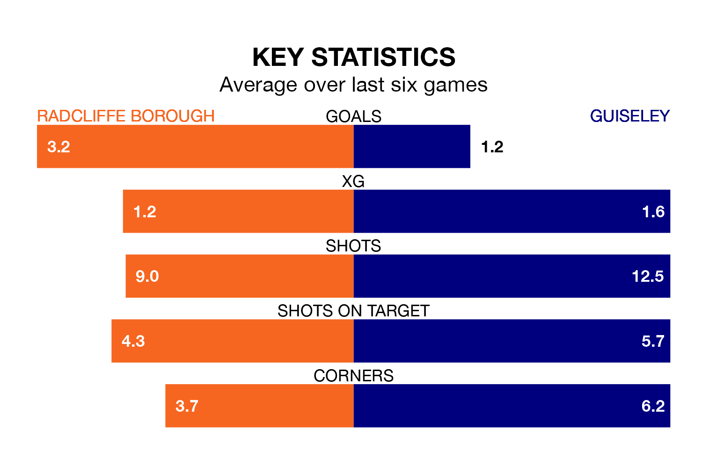

Radcliffe Borough are heavy favourites to keep all three points at home in Saturday's kick-off against Guiseley.
The Boro, who sit top of Northern Premier League with 26 games played, are priced at 1.6 to seal victory at the Stainton Park Stadium.
Sitting nine places and 21 points behind them in the table, Guiseley are 4.7 to win with *Betting Company*, while the draw is at 3.9.
With 75 goals in 26 games so far this season, Radcliffe are the league's highest scorers with 2.9 goals per game. And they are conceding fewer than average, letting in 36 goals at a rate of 1.4 per game.
Guiseley are also above average scorers, with 1.8 goals per game, compared to a league average of 1.7. They have conceded 1.5 goals per game.
Borough are in exceptional form in Northern Premier League, with six wins and no losses from their last six games.
With three wins and three losses over that period, the Lions's form is much worse – they have taken nine points from 18, compared to the Boro's 18.
Over the last two years, Radcliffe and Guiseley have played each other twice. Radcliffe won both of them.
Their last meeting was on February 25, when Radcliffe won 3-1 away.
Radcliffe's last match was on January 27, a 5-1 win against Bamber Bridge.
Guiseley lost 2-1 against Macclesfield last time out, also on January 27.
Updated: 14:12 (UTC), 02/02/24